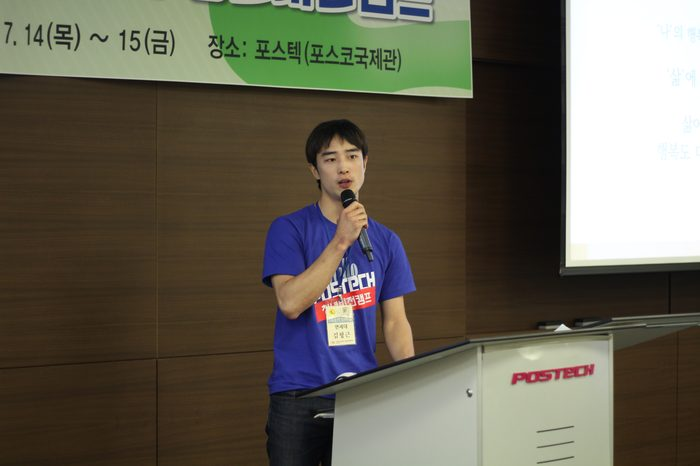

▶ 2016년 공모주제 : 행복한 한국사회로 가기 위한 가장 중요한 과제는 무엇이며, 어떻게 해결해야 하는가?
도서관에서 홀로 책과 씨름하며 보냈던 대학원 시절, 에세이 공모전과 청년비전캠프는 자유롭게 우리의 생각을 펼치고 나눌 수 있도록 해주었습니다. 우리는 논문과 보고서라는 형식에서 벗어나 자신의 생각을 마음껏 에세이를 통해 표현했으며, 이를 청년비전캠프에서 발표하며 서로 다른 다양한 생각에 공감하며 또 자신을 돌아보았습니다.
사실 처음엔 가벼운 마음으로 지원했던 에세이 공모전이었습니다. 하지만 “행복한 한국사회를 위한 과제”라는 주제(2016년)를 고민하며, 저는 우리 사회 곳곳의 고통들에 귀 기울이며 무거운 마음으로 글을 작성하게 되었습니다. 그리고 이를 통해 연구에만 갇혀 막상 처음 공부의 목적지로 삼았던 사회에 등 돌리고 있었던 제 자신에 대해 반성하게 되었습니다. 고민의 결과로 나온 ‘나’의 행복을 넘어 ‘우리’의 행복으로 나아가자는 제 에세이는, 지금까지 저를 비추는 거울이 되어 타인의 고통에 대하는 제 자신의 윤리적 태도에 대해 생각하게 합니다.
모든 만남이 그렇듯, 청년비전캠프 역시 짧지만 잊을 수 없는 추억이었습니다. 더군다나 전국에서 자신의 생각을 한 자루씩 들고 찾아온 청년들과의 만남은 3년이 지난 지금까지도 강렬한 기억으로 남아 있습니다. 첫날 있었던 에세이 발표 시간은 어떤 집단성에도 속하지 않은 자유로운 개인들의 토론, 즉 공통장(Commons)을 연상케 했습니다. 하나의 주제에서 이렇게 많은 서로 다른 생각들이 나올 수 있다는 점에 놀랐고, 서로의 주제에 공감하며 진지하게 토론하는 흔하지 않은 청년들의 모습에 또 놀랐습니다.
참여자들과의 만남 외에, 박태준미래전략연구소와의 만남 또한 지금까지도 소중한 인연이 되어오고 있습니다. 연구소에서 개최하는 다양한 토론회에 참여할 기회도 가질 수 있었고, 소속 연구자들의 우리 사회를 위한 연구 성과도 받아보며 현재까지 좋은 인연을 유지하고 있습니다. 또한 지난해 출판된 『비상구는 이쪽이다』는 지금까지 수상한 에세이들 중 15편을 한 데 묶은 책으로, 부족한 제 글이 책에 실리는 영광을 누릴 수도 있었습니다. 계속된 에세이 공모전과 청년비전캠프, 그리고 책 출간까지, 청년의 목소리를 귀담아 듣는 연구소의 진심을 느끼며 감사한 마음을 가지게 되었습니다.
2019년 올해에도 에세이 공모전과 청년비전캠프를 개최한다고 합니다. 미처 생각지도 못했지만 소중한 삶의 계기가 된 공모전에, 지금의 대학(원)생 여러분들께 진심으로 추천합니다. 자유롭게 자신의 목소리를 내고 싶은 청년들, 그리고 다양한 청년들과의 만남으로 성장하고 싶은 청년들에게 에세이 공모전과 청년비전캠프는 분명 마음에 남을 여름 소풍이 될 것입니다.
